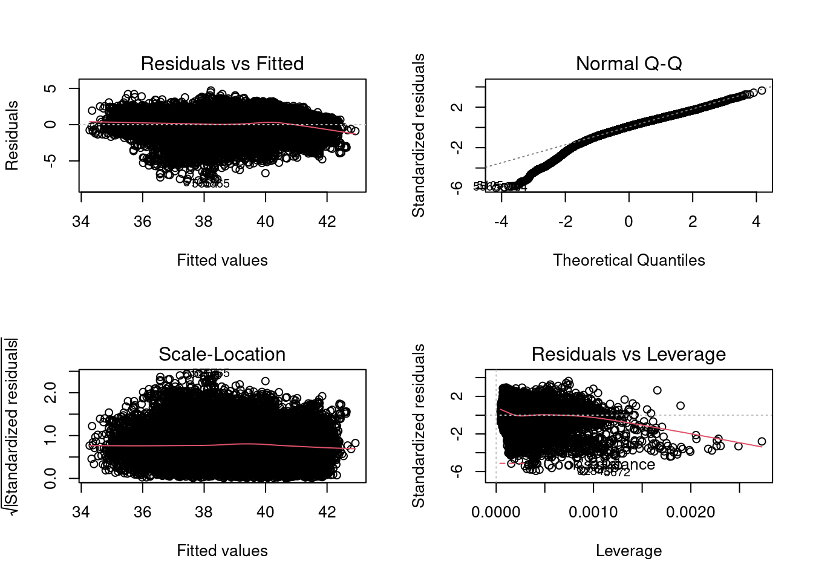
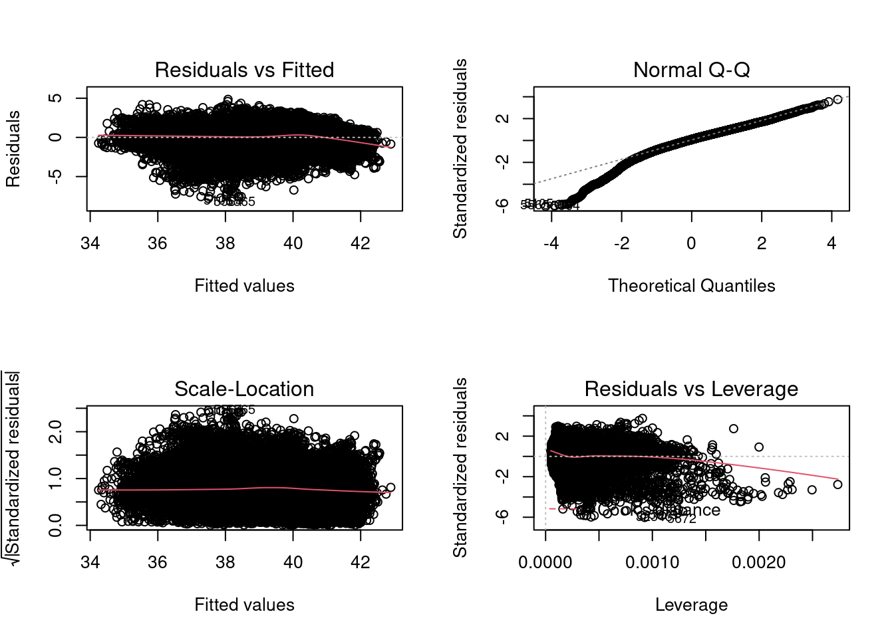
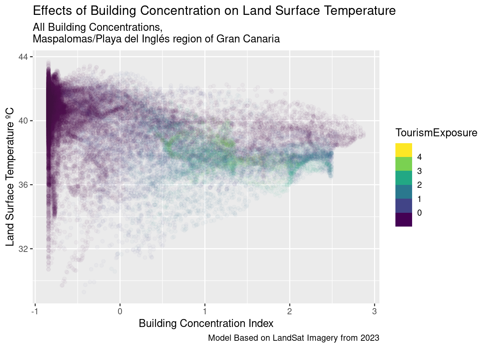
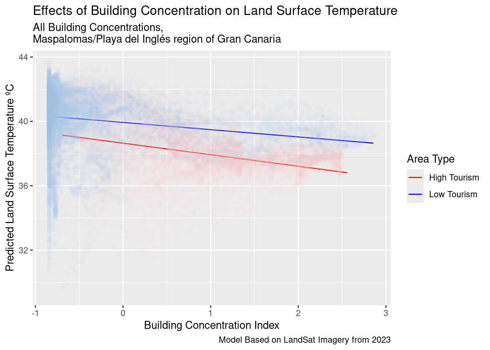
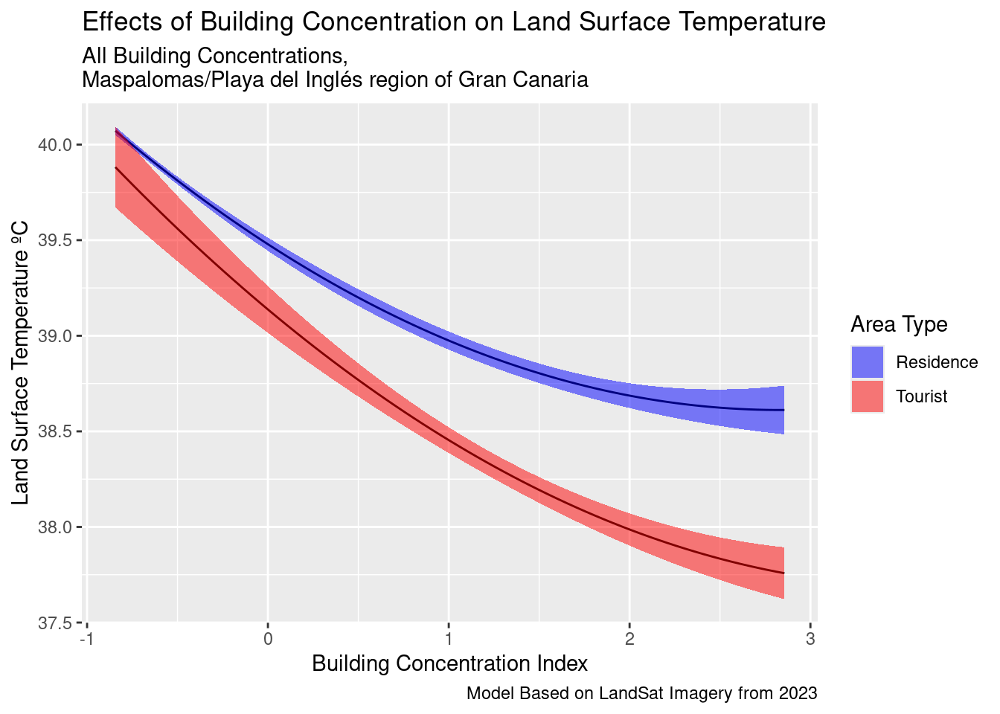
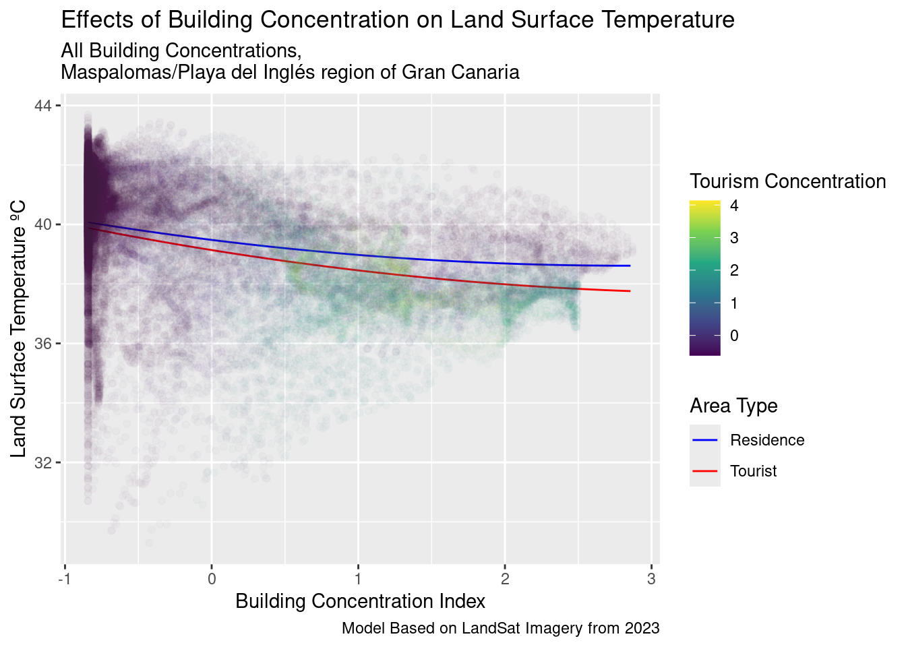

# load packages
library(tidyverse)
library(terra)
library(RColorBrewer)
library(sf)
library(leaflet)
library(osmdata)
library(modelsummary)
library(ggnewscale)
library(nnet)
library(car)LandSat 8, TS, & Modelling
Introduction
Here I train a variety of models predicting and understanding TS using LandSat 8 at 30m resolution. This is in a similar process to Onačillová et al. (2022); Son et al. (2017); Karyati et al. (2022). In this modelling process we employ two families of modelling approaches:
- Linear Regression (Onačillová et al. 2022)
Loading and Binding
In this section I load the control variables and the monthly TS data as the basis for model training. I also create a dataset of the average TS, NDVI, and NDWI across the year.
jan = read.csv("january.csv")
march = read.csv("march.csv")
may = read.csv("may.csv")
july = read.csv("july.csv")
sept = read.csv("september.csv")
nov = read.csv("november.csv")
# bind together
month_data = rbind(jan, march, may, july, sept, nov)
# load control data and join
controls = read.csv("control_variables.csv")
total_data = left_join(month_data, controls,
by = c("X" = "X",
"Y" = "Y"))
# calc average ndvi, ndwi, albedo, TS
mean_data = month_data %>%
group_by(X, Y) %>%
summarise(NDVI = mean(NDVI),
NDWI = mean(NDWI),
Albedo = mean(Albedo),
TS = mean(TS),
.groups = "drop")
mean_data = left_join(mean_data, controls,
by = c("X" = "X",
"Y" = "Y"))
month_temo = month_data %>%
group_by(Month) %>%
summarise(Temp = mean(TS))Model Building
Now that I have gathered the data, the next step is to develop several models to predict Land Surface Temperature based on our environmental inputs.
General Linear Models
The first GLM model is simply multivariate linear regression fitted within a OLS framework.
Fitting the Model
The formula for this model is:
Where \(i\) denotes the individual 30m raster tiles and \(\epsilon\) denotes the residual error not accounted for.
Also, there is analysis of a potential interaction effect between tourism and building exposure, as the types of built up area may vary as we move from a tourism heavy area, thus also adding the following term to the OLS function.
I also make a fixed effect model with weights for the month.
# compute models
model_ols1 = lm(TS ~
TourismExposure +
BuildingExposure +
Albedo +
NDVI +
NDWI +
CoastDistance +
Elevation,
data = mean_data)
summary(model_ols1)
Call:
lm(formula = TS ~ TourismExposure + BuildingExposure + Albedo +
NDVI + NDWI + CoastDistance + Elevation, data = mean_data)
Residuals:
Min 1Q Median 3Q Max
-7.7329 -0.6938 0.1266 0.8557 4.7132
Coefficients:
Estimate Std. Error t value Pr(>|t|)
(Intercept) 3.722e+01 7.715e-02 482.403 <2e-16 ***
TourismExposure -2.028e-01 9.634e-03 -21.046 <2e-16 ***
BuildingExposure -5.013e-01 9.529e-03 -52.605 <2e-16 ***
Albedo 1.351e-04 6.713e-06 20.126 <2e-16 ***
NDVI -8.624e+00 9.833e-02 -87.696 <2e-16 ***
NDWI -1.240e+01 1.474e-01 -84.071 <2e-16 ***
CoastDistance 6.529e-01 1.043e-02 62.593 <2e-16 ***
Elevation -3.677e-04 2.566e-04 -1.433 0.152
---
Signif. codes: 0 '***' 0.001 '**' 0.01 '*' 0.05 '.' 0.1 ' ' 1
Residual standard error: 1.296 on 33078 degrees of freedom
Multiple R-squared: 0.578, Adjusted R-squared: 0.5779
F-statistic: 6473 on 7 and 33078 DF, p-value: < 2.2e-16vif(model_ols1) TourismExposure BuildingExposure Albedo NDVI
1.827350 1.787731 1.172550 1.181254
NDWI CoastDistance Elevation
1.274859 1.842025 2.030954 par(mfrow=c(2,2))
plot(model_ols1)
# with an interaction term
model_ols2 = lm(TS ~
TourismExposure * BuildingExposure +
NDVI +
Albedo +
NDWI +
CoastDistance +
Elevation,
data = mean_data)
summary(model_ols2)
Call:
lm(formula = TS ~ TourismExposure * BuildingExposure + NDVI +
Albedo + NDWI + CoastDistance + Elevation, data = mean_data)
Residuals:
Min 1Q Median 3Q Max
-7.7926 -0.7000 0.1203 0.8509 4.8558
Coefficients:
Estimate Std. Error t value Pr(>|t|)
(Intercept) 3.722e+01 7.707e-02 482.943 < 2e-16 ***
TourismExposure -2.986e-01 1.471e-02 -20.302 < 2e-16 ***
BuildingExposure -4.828e-01 9.756e-03 -49.485 < 2e-16 ***
NDVI -8.599e+00 9.827e-02 -87.511 < 2e-16 ***
Albedo 1.308e-04 6.725e-06 19.451 < 2e-16 ***
NDWI -1.233e+01 1.475e-01 -83.620 < 2e-16 ***
CoastDistance 6.753e-01 1.074e-02 62.883 < 2e-16 ***
Elevation -1.078e-03 2.693e-04 -4.004 6.24e-05 ***
TourismExposure:BuildingExposure 9.435e-02 1.095e-02 8.619 < 2e-16 ***
---
Signif. codes: 0 '***' 0.001 '**' 0.01 '*' 0.05 '.' 0.1 ' ' 1
Residual standard error: 1.295 on 33077 degrees of freedom
Multiple R-squared: 0.579, Adjusted R-squared: 0.5789
F-statistic: 5685 on 8 and 33077 DF, p-value: < 2.2e-16vif(model_ols2)there are higher-order terms (interactions) in this model
consider setting type = 'predictor'; see ?vif TourismExposure BuildingExposure
4.269356 1.878304
NDVI Albedo
1.182218 1.179085
NDWI CoastDistance
1.278131 1.956993
Elevation TourismExposure:BuildingExposure
2.240954 2.772837 par(mfrow=c(2,2))
plot(model_ols2)
# define a threshold for high and low tourism exposure
threshold = 0
# split the dataset
high_tourism = subset(mean_data, TourismExposure > threshold)
low_tourism = subset(mean_data, TourismExposure <= threshold)
# fit separate models for high and low tourism exposure areas
model_high = lm(TS ~ BuildingExposure + Albedo + NDVI + NDWI + CoastDistance + Elevation, data = high_tourism)
model_low = lm(TS ~ BuildingExposure + Albedo + NDVI + NDWI + CoastDistance + Elevation, data = low_tourism)
# compare summaries
summary(model_high)
Call:
lm(formula = TS ~ BuildingExposure + Albedo + NDVI + NDWI + CoastDistance +
Elevation, data = high_tourism)
Residuals:
Min 1Q Median 3Q Max
-7.2660 -0.7750 0.0152 0.7544 4.3550
Coefficients:
Estimate Std. Error t value Pr(>|t|)
(Intercept) 3.739e+01 1.316e-01 284.059 < 2e-16 ***
BuildingExposure -7.169e-01 2.257e-02 -31.764 < 2e-16 ***
Albedo 3.881e-05 1.167e-05 3.327 0.000882 ***
NDVI -7.310e+00 2.031e-01 -35.987 < 2e-16 ***
NDWI -1.004e+01 2.556e-01 -39.285 < 2e-16 ***
CoastDistance 6.503e-01 1.973e-02 32.955 < 2e-16 ***
Elevation 2.437e-02 1.339e-03 18.197 < 2e-16 ***
---
Signif. codes: 0 '***' 0.001 '**' 0.01 '*' 0.05 '.' 0.1 ' ' 1
Residual standard error: 1.367 on 9662 degrees of freedom
Multiple R-squared: 0.3917, Adjusted R-squared: 0.3913
F-statistic: 1037 on 6 and 9662 DF, p-value: < 2.2e-16summary(model_low)
Call:
lm(formula = TS ~ BuildingExposure + Albedo + NDVI + NDWI + CoastDistance +
Elevation, data = low_tourism)
Residuals:
Min 1Q Median 3Q Max
-7.6435 -0.6557 0.1552 0.8414 3.8209
Coefficients:
Estimate Std. Error t value Pr(>|t|)
(Intercept) 3.715e+01 9.529e-02 389.795 < 2e-16 ***
BuildingExposure -4.508e-01 1.128e-02 -39.979 < 2e-16 ***
Albedo 1.617e-04 8.221e-06 19.669 < 2e-16 ***
NDVI -8.798e+00 1.124e-01 -78.274 < 2e-16 ***
NDWI -1.332e+01 1.799e-01 -74.025 < 2e-16 ***
CoastDistance 6.047e-01 1.271e-02 47.558 < 2e-16 ***
Elevation -1.004e-03 2.773e-04 -3.619 0.000296 ***
---
Signif. codes: 0 '***' 0.001 '**' 0.01 '*' 0.05 '.' 0.1 ' ' 1
Residual standard error: 1.241 on 23410 degrees of freedom
Multiple R-squared: 0.4911, Adjusted R-squared: 0.491
F-statistic: 3766 on 6 and 23410 DF, p-value: < 2.2e-16Plot Fit Key Linear Models
scatterplot = all_density_plot = ggplot() +
geom_point(data = mean_data,
aes(x = BuildingExposure,
y = TS,
colour = TourismExposure),
alpha = 0.03) +
scale_color_viridis_b() +
labs(title = "Effects of Building Concentration on Land Surface Temperature",
subtitle = "All Building Concentrations,
Maspalomas/Playa del Inglés region of Gran Canaria",
caption = "Model Based on LandSat Imagery from 2023",
x = "Building Concentration Index",
y = "Land Surface Temperature ºC")
scatterplot
# all building concentrations
tourism_dense = tibble(
NDVI = mean(high_tourism$NDVI),
BuildingExposure = seq(min(high_tourism$BuildingExposure),
max(high_tourism$BuildingExposure),
by = 0.05),
Albedo = mean(high_tourism$Albedo),
NDWI = mean(high_tourism$NDWI),
CoastDistance = mean(high_tourism$CoastDistance),
Elevation = mean(high_tourism$Elevation)
)
tourism_sparse = tibble(
NDVI = mean(low_tourism$NDVI),
BuildingExposure = seq(min(low_tourism$BuildingExposure),
max(low_tourism$BuildingExposure),
by = 0.05),
Albedo = mean(low_tourism$Albedo),
NDWI = mean(low_tourism$NDWI),
CoastDistance = mean(low_tourism$CoastDistance),
Elevation = mean(low_tourism$Elevation)
)
# predict values
tourism_dense_predictions = predict(
model_high,
newdata = tourism_dense,
se.fit = TRUE,
interval = "confidence"
) %>%
as.data.frame() %>%
bind_cols(tourism_dense) %>%
select(c("fit.fit", "fit.lwr", "fit.upr", "BuildingExposure"))
tourism_dense_predictions$area = "High Tourism"
tourism_sparse_predictions = predict(
model_low,
newdata = tourism_sparse,
se.fit = TRUE,
interval = "confidence"
) %>%
as.data.frame() %>%
bind_cols(tourism_sparse) %>%
select(c("fit.fit", "fit.lwr", "fit.upr", "BuildingExposure"))
tourism_sparse_predictions$area = "Low Tourism"
# bind into toplot
toplot = rbind(tourism_dense_predictions,
tourism_sparse_predictions)
# comparison plot
all_density_plot = ggplot() +
geom_line(data = toplot,
aes(x = BuildingExposure,
y = fit.fit,
colour = area),
alpha = 2) +
scale_colour_manual(values = c("Low Tourism" = "blue", "High Tourism" = "red"),
name = "Area Type") +
geom_point(data = high_tourism,
aes(x = BuildingExposure,
y = TS),
colour = "pink",
alpha = 0.03) +
geom_point(data = low_tourism,
aes(x = BuildingExposure,
y = TS),
colour = "lightblue",
alpha = 0.03) +
labs(title = "Effects of Building Concentration on Land Surface Temperature",
subtitle = "All Building Concentrations,
Maspalomas/Playa del Inglés region of Gran Canaria",
caption = "Model Based on LandSat Imagery from 2023",
x = "Building Concentration Index",
y = "Predicted Land Surface Temperature ºC")
all_density_plot
Polynominal Interaction Modeling
model_poly_interaction = lm(TS ~
BuildingExposure + I(BuildingExposure^2) +
TourismExposure + I(TourismExposure^2) +
Albedo + NDVI + NDWI +
CoastDistance + Elevation +
BuildingExposure:TourismExposure +
BuildingExposure:Albedo +
BuildingExposure:NDVI +
BuildingExposure:NDWI +
TourismExposure:Albedo +
TourismExposure:NDVI +
TourismExposure:NDWI,
data = mean_data)
# Summary of the polynomial model with interactions
summary(model_poly_interaction)
Call:
lm(formula = TS ~ BuildingExposure + I(BuildingExposure^2) +
TourismExposure + I(TourismExposure^2) + Albedo + NDVI +
NDWI + CoastDistance + Elevation + BuildingExposure:TourismExposure +
BuildingExposure:Albedo + BuildingExposure:NDVI + BuildingExposure:NDWI +
TourismExposure:Albedo + TourismExposure:NDVI + TourismExposure:NDWI,
data = mean_data)
Residuals:
Min 1Q Median 3Q Max
-7.0379 -0.6840 0.0702 0.7838 5.1192
Coefficients:
Estimate Std. Error t value Pr(>|t|)
(Intercept) 3.698e+01 7.572e-02 488.309 < 2e-16 ***
BuildingExposure 2.127e+00 9.814e-02 21.668 < 2e-16 ***
I(BuildingExposure^2) 1.079e-01 1.190e-02 9.073 < 2e-16 ***
TourismExposure -7.018e-01 9.170e-02 -7.653 2.02e-14 ***
I(TourismExposure^2) 1.077e-01 7.852e-03 13.723 < 2e-16 ***
Albedo 1.369e-04 6.534e-06 20.954 < 2e-16 ***
NDVI -8.358e+00 9.970e-02 -83.827 < 2e-16 ***
NDWI -1.255e+01 1.436e-01 -87.387 < 2e-16 ***
CoastDistance 7.095e-01 1.093e-02 64.905 < 2e-16 ***
Elevation -3.263e-03 2.657e-04 -12.283 < 2e-16 ***
BuildingExposure:TourismExposure -4.985e-02 1.395e-02 -3.573 0.000354 ***
BuildingExposure:Albedo -2.067e-04 8.196e-06 -25.221 < 2e-16 ***
BuildingExposure:NDVI 2.949e-01 1.719e-01 1.716 0.086199 .
BuildingExposure:NDWI 6.659e+00 1.782e-01 37.359 < 2e-16 ***
TourismExposure:Albedo 1.806e-05 7.638e-06 2.364 0.018071 *
TourismExposure:NDVI 5.301e-01 1.569e-01 3.378 0.000730 ***
TourismExposure:NDWI -1.481e+00 1.670e-01 -8.865 < 2e-16 ***
---
Signif. codes: 0 '***' 0.001 '**' 0.01 '*' 0.05 '.' 0.1 ' ' 1
Residual standard error: 1.231 on 33069 degrees of freedom
Multiple R-squared: 0.6199, Adjusted R-squared: 0.6197
F-statistic: 3370 on 16 and 33069 DF, p-value: < 2.2e-16# all building concentrations, polynominal
tourism_area = tibble(
TourismExposure = 3,
NDVI = mean(total_data$NDVI),
BuildingExposure = seq(min(total_data$BuildingExposure),
max(total_data$BuildingExposure),
by = 0.05),
Albedo = mean(total_data$Albedo),
NDWI = mean(total_data$NDWI),
CoastDistance = mean(total_data$CoastDistance),
Elevation = mean(total_data$Elevation)
)
residence_area = tibble(
TourismExposure = -0.6,
NDVI = mean(total_data$NDVI),
BuildingExposure = seq(min(total_data$BuildingExposure),
max(total_data$BuildingExposure),
by = 0.05),
Albedo = mean(total_data$Albedo),
NDWI = mean(total_data$NDWI),
CoastDistance = mean(total_data$CoastDistance),
Elevation = mean(total_data$Elevation)
)
# bind together
scenario = rbind(tourism_area, residence_area)
# predict values
area_predictions = predict(
model_poly_interaction,
newdata = scenario,
se.fit = TRUE,
interval = "confidence"
)
# make tibble
area_predictions = area_predictions$fit %>%
as_tibble()
# make toplot
toplot = bind_cols(scenario,
area_predictions)
toplot = select(toplot, c("fit", "lwr", "upr",
"BuildingExposure",
"TourismExposure"))
toplot$area = ifelse(toplot$TourismExposure == -0.6, "Residence",
"Tourist")
# plot polynominals
poly_density_plot_lines = ggplot(data = toplot,
aes(x = BuildingExposure,
y = fit,
ymin = lwr,
ymax = upr,
fill = area)) +
geom_line(alpha = 2) +
geom_ribbon(alpha = 0.5) +
scale_fill_manual(values = c("Residence" = "blue", "Tourist" = "red"),
name = "Area Type") +
labs(title = "Effects of Building Concentration on Land Surface Temperature",
subtitle = "All Building Concentrations,
Maspalomas/Playa del Inglés region of Gran Canaria",
caption = "Model Based on LandSat Imagery from 2023",
x = "Building Concentration Index",
y = "Land Surface Temperature ºC")
poly_density_plot_points = ggplot() +
geom_line(data = toplot,
aes(x = BuildingExposure,
y = fit,
colour = area),
alpha = 2) +
scale_colour_manual(values = c("Residence" = "blue", "Tourist" = "red"),
name = "Area Type") +
new_scale_color() +
geom_point(data = mean_data,
aes(x = BuildingExposure,
y = TS,
colour = TourismExposure),
alpha = 0.02) +
scale_color_viridis_c(name = "Tourism Concentration") +
labs(title = "Effects of Building Concentration on Land Surface Temperature",
subtitle = "All Building Concentrations,
Maspalomas/Playa del Inglés region of Gran Canaria",
caption = "Model Based on LandSat Imagery from 2023",
x = "Building Concentration Index",
y = "Land Surface Temperature ºC")
poly_density_plot_lines
poly_density_plot_points
References
Karyati, N E, R I Sholihah, D R Panuju, B H Trisasongko, D Nadalia, and L O S Iman. 2022. “Application of Landsat-8 OLI/TIRS to Assess the Urban Heat Island (UHI).” IOP Conference Series: Earth and Environmental Science 1109 (1): 012069. https://doi.org/10.1088/1755-1315/1109/1/012069.
Onačillová, Katarína, Michal Gallay, Daniel Paluba, Anna Péliová, Ondrej Tokarčík, and Daniela Laubertová. 2022. “Combining Landsat 8 and Sentinel-2 Data in Google Earth Engine to Derive Higher Resolution Land Surface Temperature Maps in Urban Environment.” Remote Sensing 14 (16): 4076. https://doi.org/10.3390/rs14164076.
Son, Nguyen-Thanh, Chi-Farn Chen, Cheng-Ru Chen, Bui-Xuan Thanh, and Tran-Hau Vuong. 2017. “Assessment of Urbanization and Urban Heat Islands in Ho Chi Minh City, Vietnam Using Landsat Data.” Sustainable Cities and Society 30 (April): 150–61. https://doi.org/10.1016/j.scs.2017.01.009.